Концепт редизайна · Мобильное приложение
Редизайн мобильного приложения WebMoney Keeper
Обновлённый визуал, упрощённая структура и новые функции для одной из крупнейших платёжных систем.
- Роль:
- Дизайнер — исследование, проектирование, UI, анимации
- Формат:
- Концепт, выполнен в учебных целях
- Платформы:
- iOS, Android · светлая и тёмная темы
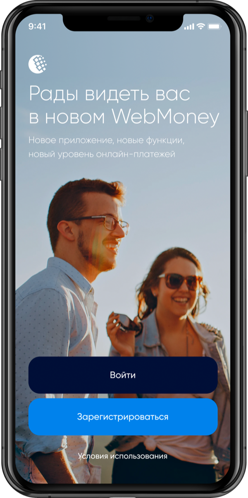
Идея
Идея пришла при использовании приложения: устаревший визуал и запутанная структура текущего дизайна натолкнули на мысль о необходимости редизайна.
-
01 Исследование
- Анализ рынка
- Пользовательские интервью, персоны, CJM
- Конкурентный анализ
-
02 Проектирование
- User Flow
- Разработка структуры
- Прототипирование
-
03 Дизайн
- UI-дизайн и анимации
- Создание дизайн-системы
- Презентация
Анализ рынка
Согласно исследованиям Mediascope 2020 года, самые активные пользователи электронных денег в крупных городах России:
- 93,7%респондентов хотя бы раз в год оплачивают в интернете товары или услуги
- 81,7%люди 25–34 лет
- 82,2%люди 35–44 лет
Источник: mediascope.net
Данные подтверждаются статистикой 733 тыс. аудитории социальных сетей WebMoney и сервисов-конкурентов:
Пол
Возраст
- 7%до 18
- 20%18–25
- 29%25–35
- 33%35–45
- 11%45+
Профессии пользователей
- 39%Руководитель
- 21%Администратор
- 10%Инженер
- 6%Программист
- 6%Дизайнер
- 18%Другие
Источник: сервис анализа соцсетей PepperPanel
Что оплачивают с помощью электронных денег в России
Прослеживается рост популярности товаров и услуг, которые используются дома. Доля пользователей, которые минимум раз в год платят за них с компьютера или смартфона.
| Категория | 2019 | 2020 |
|---|
Источник: исследования TNS и Mediascope «Электронные платежи в России». Данные собраны из открытых источников и соцсетей и могут отличаться от реальных.
Пользовательские интервью
На основе опроса знакомых пользователей и отзывов в App Store, Google Play и на независимых сайтах сформирован список проблем, которые можно решить редизайном:
- Сложности с обращением в техническую поддержку
- Недостаточный функционал: например, нельзя привязать банковскую карту к кошельку
- Визуально устаревший интерфейс
- Сложная запутанная структура и, как следствие, проблемы с доступом к важному функционалу
- Несоответствие устоявшимся паттернам поведения в популярных банковских сервисах
На главном экране сделан акцент на пополнении баланса и истории операций. Раздражает принцип «пополни кошелёк, а дальше разбирайся сам».
Хотелось бы, чтобы при входе были доступны как пополнение, так и переводы на карты и счета, избранное и платежи.
Непонятно, где чат, а где уведомления. А система авторизации вообще боль.
Пользовательские персоны
Не успели прочесть? Нажмите на паузу :)
Проектирование
Новая упрощённая структура оптимизирует навигацию и приводит функционал к привычному виду электронного кошелька, знакомого большинству пользователей, но учитывает особенности платёжной системы.
- Вынести основной функционал кошелька на главный экран
- Упростить авторизацию и регистрацию
- Объединить чаты с пользователями, техподдержку и уведомления об операциях
- Расширить функционал работы с банковскими картами
- Автоматизировать конвертацию валюты при переводе
- Добавить возможность анализировать финансы
UI-дизайн · Вход
Начать пользоваться кошельком — легко
Чтобы войти или зарегистрироваться, достаточно ввести номер телефона и код из SMS.
Простая и интуитивно понятная система безопасности, знакомая любому пользователю: код из SMS и Face ID для следующих входов.

UI-дизайн · Главный экран
Быстрый доступ ко всем функциям счёта
Главный экран позволяет в одно касание проверять баланс кошельков, переводить деньги другим пользователям, оплачивать услуги, переходить к профилю, сообщениям и уведомлениям.
- Внутри кошелька к быстрым операциям добавлен краткий анализ финансов с выбором периода и история операций
- К переводам добавлены комментарии — они также отображаются в мессенджере
- По нажатию на операцию открывается подробный отчёт: квитанция, повтор, сохранение в избранное
Анализ финансов
Решена распространённая проблема анализа финансов
У сервисов-конкурентов графики и диаграммы обычно нельзя прочитать без прокрутки к легенде: чтобы понять, к чему относится значение, приходится листать к нужной категории расходов.
В новом интерфейсе кошелька категории расходов обозначены на графике и расположены в пределах одного экрана.
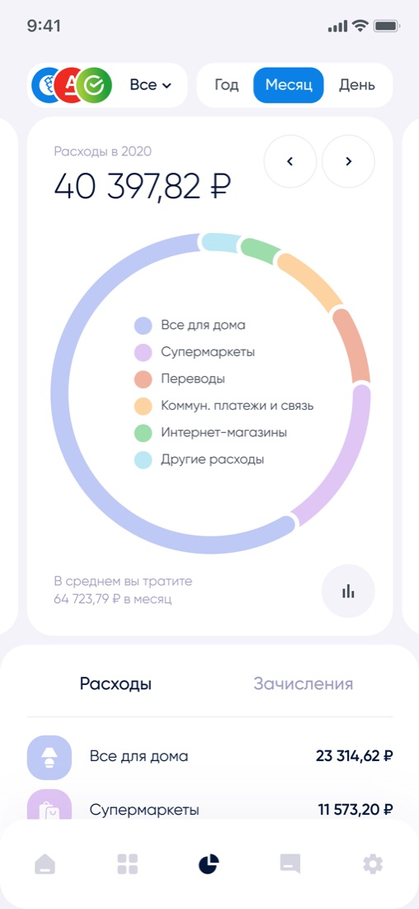
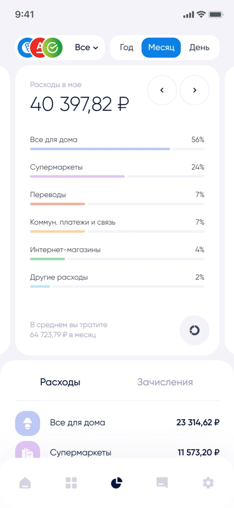
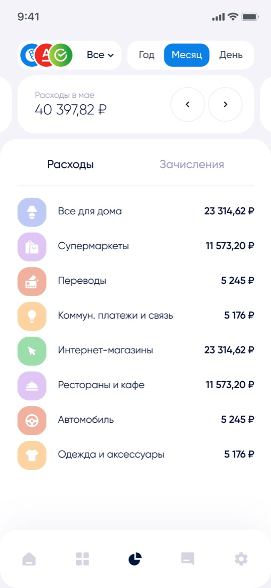
Ещё решения
-
Платежи
Упорядоченные категории и избранные платежи позволяют быстро найти нужную операцию.
-
Сообщения
Чаты и центр уведомлений объединены в один раздел. Уведомления о переводах отображаются в чатах, а комментарии — в виде сообщений.
-
Атомарный дизайн
Интерфейс построен по принципам атомарного дизайна: это позволяет быстро развивать продукт с фокусом на простоте, удобстве и функциональности.
Тёмная тема тоже есть
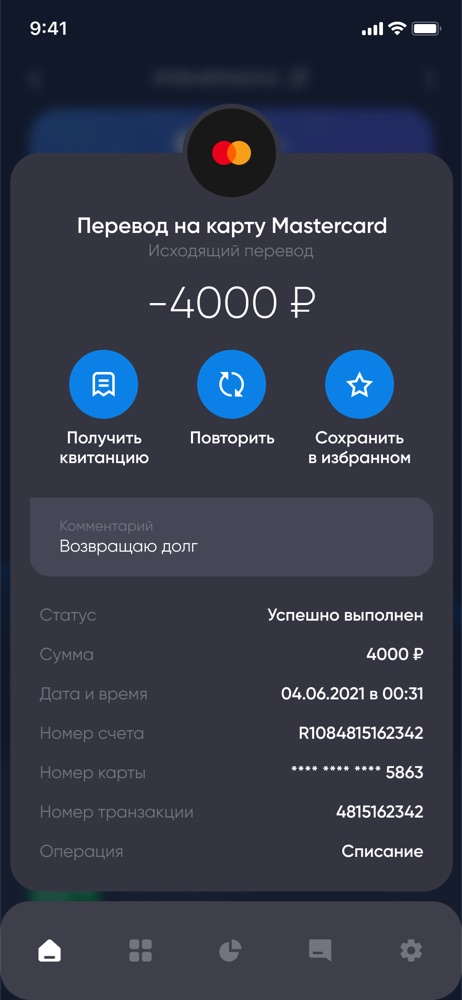
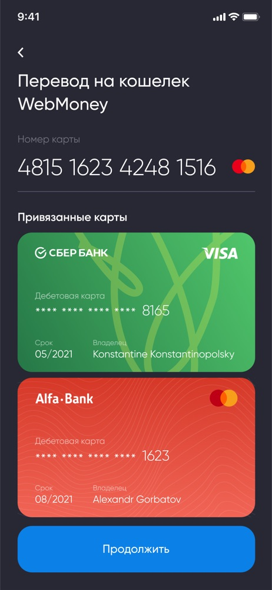
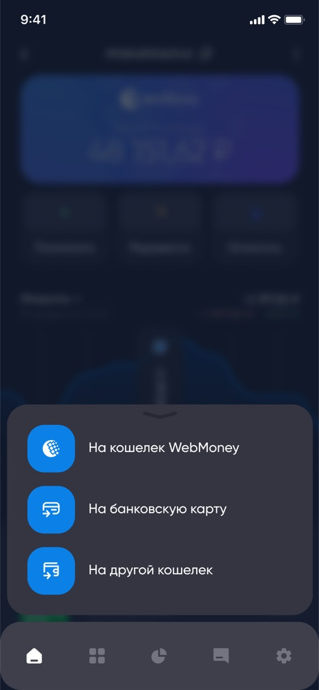
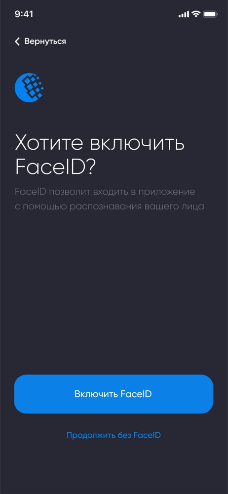
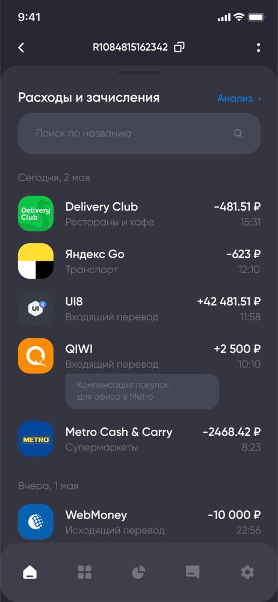
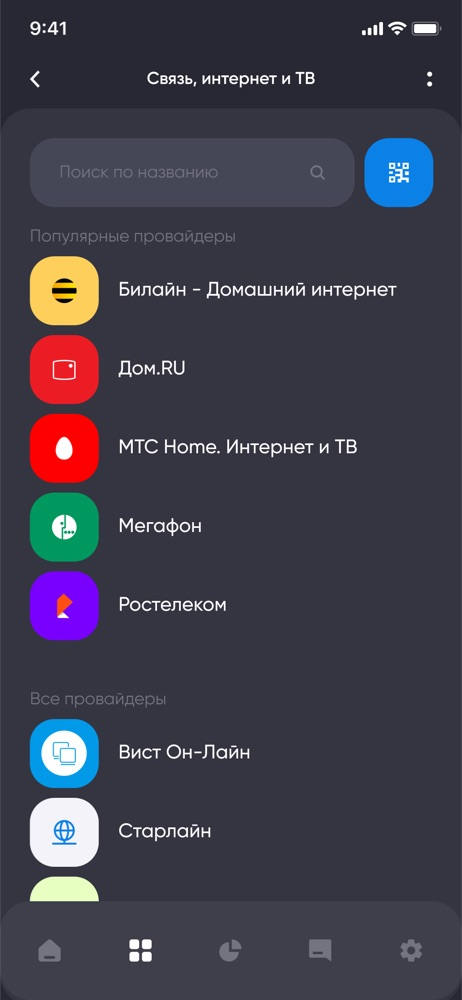
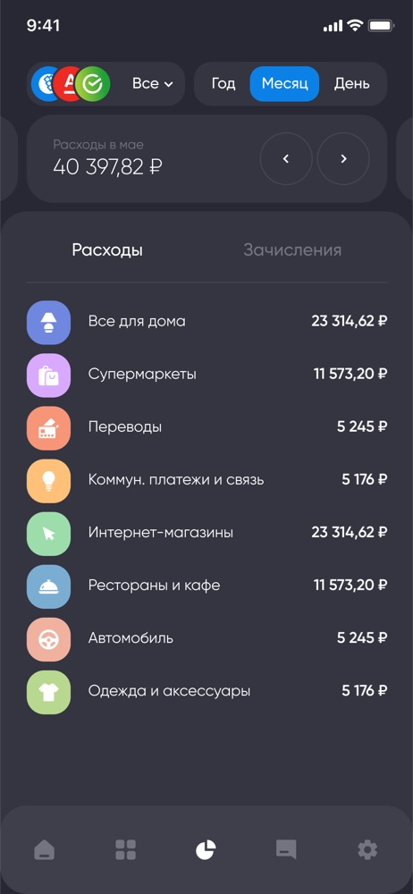
Спасибо за просмотр!
Концепт редизайна мобильного приложения WebMoney выполнен в учебных целях.